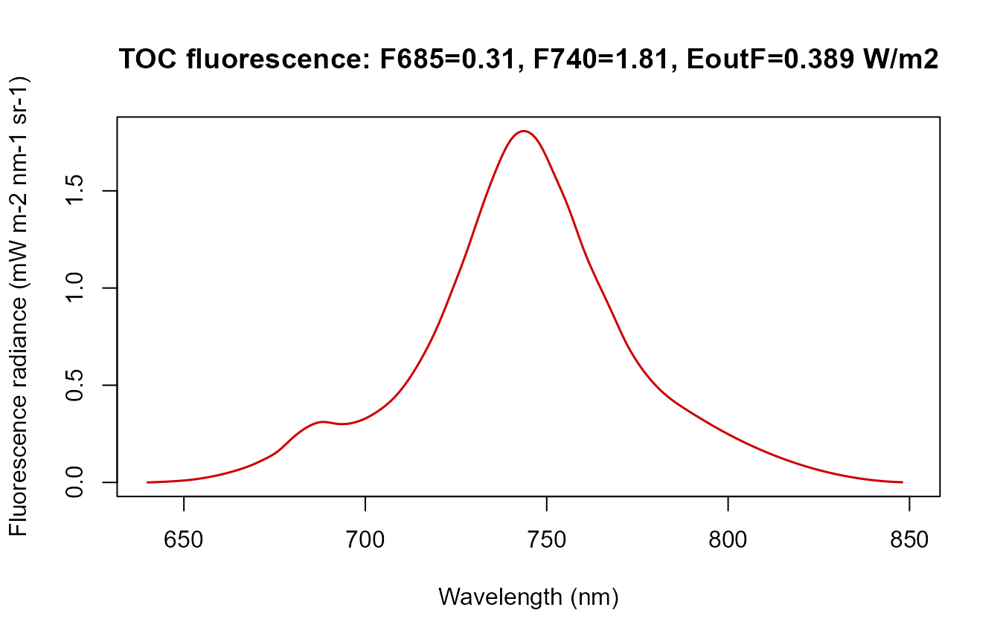
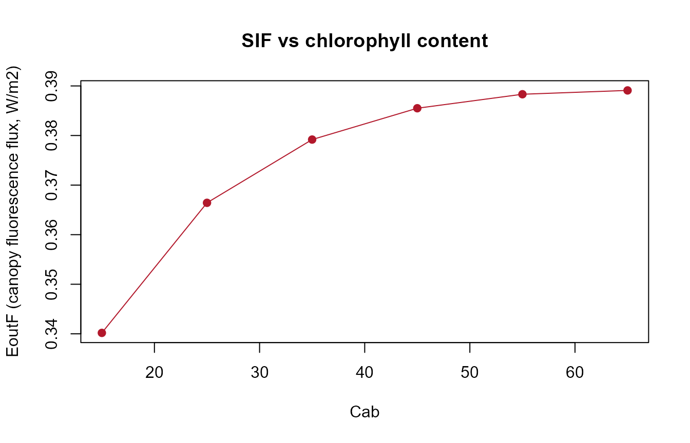
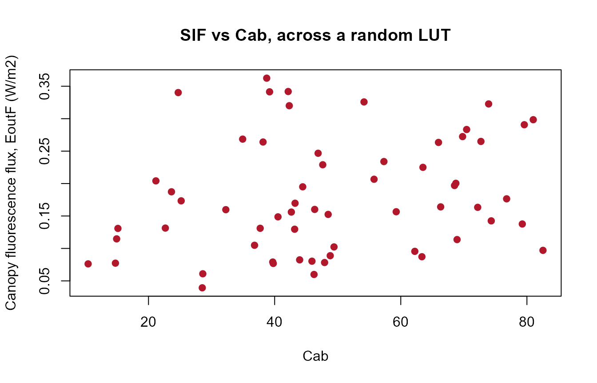

04. Fluorescence (SIF)
t04-fluorescence.Rmdget.SCOPE() computes sun-induced chlorophyll
fluorescence (SIF) as a standard part of every run – unlike ToolsRTM’s
Fluspect-B/-Cx (Tutorial 02 of that series), which needs the leaf-level
matrices assembled by hand into a canopy signal, SCOPE already
propagates fluorescence through the full canopy radiative transfer for
you.
1. One simulation’s fluorescence spectrum
path_input <- system.file("input", package = "SCOPEinR")
table.with.opts <- read.table(file.path(path_input, "setoptions.csv"), header = TRUE, sep = ",")
LUT_default <- read.table(file.path(path_input, "LUT_input.csv"), header = TRUE, sep = ",")
invisible(capture.output(
res <- get.SCOPE(LUT = LUT_default[1, ], options.SCOPE = table.with.opts,
optipar = SCOPEinR::optipar2021.Pro.CX, leaf.model = "fluspect-CX",
canopy.model = "fourSAIL", get.outputs = "ALL", get.plots = FALSE)[[1]]
))
wlF <- res$data.spectral$wlF
plot(wlF, res$data.rad$LoF_, type = "l", col = "red3", lwd = 1.5,
xlab = "Wavelength (nm)", ylab = "Fluorescence radiance (mW m-2 nm-1 sr-1)",
main = sprintf("TOC fluorescence: F685=%.2f, F740=%.2f, EoutF=%.3f W/m2",
res$data.rad$F685, res$data.rad$F740, res$data.rad$EoutF))
The classic double-peak SIF spectrum – a red peak near 685nm
(F685) and a larger far-red peak near 740nm
(F740), on top of the chlorophyll re-absorption dip between
them. EoutF is the single canopy-integrated fluorescence
flux (W/m²) used throughout this series as the scalar SIF summary,
e.g. Tutorial 09’s SIF-vs-photosynthesis experiment.
2. Which traits drive SIF?
calc_fluorescence=1 is on by default in
setoptions.csv. Sweep Cab (the pigment SIF
emission scales with) across several simulations:
cab_values <- seq(15, 65, length.out = 6)
res_cab <- lapply(cab_values, function(v) {
row_i <- LUT_default[1, ]; row_i$Cab <- v
invisible(capture.output(
r <- get.SCOPE(LUT = row_i, options.SCOPE = table.with.opts,
optipar = SCOPEinR::optipar2021.Pro.CX, leaf.model = "fluspect-CX",
canopy.model = "fourSAIL", get.outputs = "ALL", get.plots = FALSE)[[1]]
))
r
})
EoutF_by_cab <- sapply(res_cab, function(r) r$data.rad$EoutF)
plot(cab_values, EoutF_by_cab, type = "o", pch = 19, col = "#B2182B",
xlab = "Cab", ylab = "EoutF (canopy fluorescence flux, W/m2)",
main = "SIF vs chlorophyll content")
3. Fluorescence across many random simulations
inputLUT <- read.table(file.path(path_input, "inputs_SCOPE.csv"), header = TRUE, sep = ",")
N_SAMPLES <- 60
Table.LUT.many <- getLUT.SCOPE(inputLUT = inputLUT, nLUT = N_SAMPLES, setseed = 5)
db.sim.many <- lapply(seq_len(N_SAMPLES), function(i) {
tryCatch(
invisible(capture.output(
r <- get.SCOPE(LUT = Table.LUT.many[i, ], options.SCOPE = table.with.opts,
optipar = SCOPEinR::optipar2021.Pro.CX, leaf.model = "fluspect-CX",
canopy.model = "fourSAIL", get.outputs = "ALL", get.plots = FALSE)[[1]]
)),
error = function(e) NULL
)
r
})
ok <- !sapply(db.sim.many, is.null)
db.sim.many <- db.sim.many[ok]; Table.LUT.many <- Table.LUT.many[ok, ]
cat(sum(ok), "/", N_SAMPLES, "simulations usable\n")
#> 60 / 60 simulations usable
EoutF_vals <- sapply(db.sim.many, function(r) r$data.rad$EoutF)
plot(Table.LUT.many$Cab, EoutF_vals, pch = 19, col = "#B2182B",
xlab = "Cab", ylab = "Canopy fluorescence flux, EoutF (W/m2)",
main = "SIF vs Cab, across a random LUT")
Fluorescence is sensitive to leaf pigments, not just to LAI/structure
– try substituting Table.LUT.many$Anth or $Car
for Cab above to see the same output against anthocyanin or
carotenoid content instead.